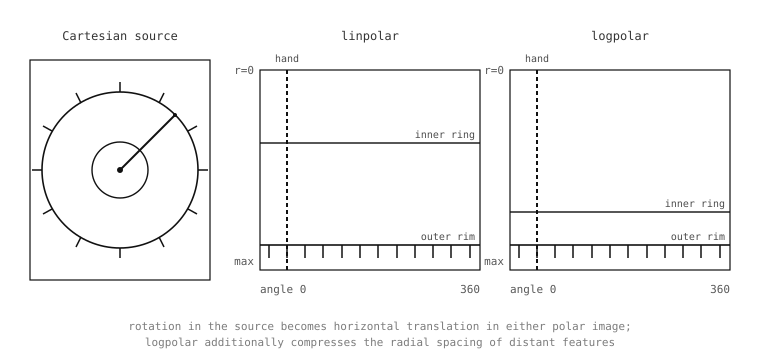

5.24. 극좌표 변환¶
극좌표는 좌측 상단 원점으로부터의 가로 및 세로 오프셋 대신, 기준 방향으로부터의 각도와 선택한 중심으로부터의 거리로 각 픽셀을 지정합니다. 이 표현 방식은 하나의 항등 관계 덕분에 그 가치를 발휘합니다. 선택한 중심을 기준으로 한 회전은 각도 축을 따른 이동(translation)으로 바뀌며, 이로 인해 회전 불변 알고리즘이 회전을 직접 다룰 때보다 훨씬 단순한 파라미터 공간을 탐색할 수 있게 됩니다. linpolar() 과 logpolar() 가 이 재투영을 수행합니다.
5.24.1. 두 가지 메서드¶
linpolar() 은 선형 거리 축을 사용하여 직교좌표에서 극좌표로의 재투영을 수행합니다. 각 출력 열은 중심을 둘러싼 고정된 각도에 대응하고, 각 출력 행은 중심으로부터의 고정된 거리에 대응합니다.
img.linpolar()
logpolar() 은 동일한 재투영을 로그 거리 축으로 수행합니다. 각도 처리는 동일하며, 차이점은 거리가 출력의 행을 따라 선형이 아니라 지수적으로 증가한다는 것입니다. 이 차이가 중요한 이유는 극좌표가 드러내는 두 번째 기하학적 항등 관계 때문입니다. 선택한 중심을 기준으로 한 원본의 스케일링은 거리 축을 따른 이동으로 바뀌는데, 이는 그 축이 로그일 때만 성립합니다. 선형 거리 축에서는 스케일링이 극좌표 이미지를 늘리지만, 로그 거리 축에서는 스케일링이 이미지를 고정된 양만큼 이동시킵니다.
img.logpolar()
두 메서드 모두 극좌표 재투영의 중심을 원본 픽셀 좌표로 설정하는 x= 및 y= 키워드를 받으며, 기본값은 각각 이미지 너비의 절반과 이미지 높이의 절반입니다. 중심 선택은 중요합니다. 잘못된 점을 기준으로 한 극좌표 변환은 회전/이동 항등 관계를 깨뜨리는 방식으로 콘텐츠가 뒤섞인 결과가 됩니다.

linpolar() 과 logpolar() 로 재투영한 시계 문자판. 원본의 동심원은 출력에서 가로선이 되고, 각도 눈금은 각도 축을 따라 균등한 간격의 세로선이 됩니다. 로그-극좌표 변형은 반경 방향 간격을 압축합니다.¶
5.24.2. 각각 언제 사용할 것인가¶
linpolar() 과 logpolar() 사이의 선택은 애플리케이션이 어떤 불변성을 필요로 하는지에 대한 선택입니다. 회전 불변성 만 필요한 경우 – 동일한 장면이 두 프레임에 나타나고 두 번째 프레임이 알 수 없는 각도로 회전된 것을 검출하는 경우 – linpolar() 만으로 충분합니다. 회전은 극좌표 이미지에서 가로 이동이 되고, find_displacement() 같은 이동 전용 매처가 이동 크기로부터 각도를 복원합니다. 스케일 불변성 도 중요한 경우 – 두 번째 프레임이 회전되고 동시에 확대된 경우 – logpolar() 은 두 미지수를 모두 이동으로 변환합니다. 회전은 가로 이동, 스케일은 세로 이동으로 변환합니다.
이것이 회전 및 스케일 변화에 강건한 추적기를 만드는 표준 방법입니다. 기준 프레임과 각 실시간 프레임을 동일한 중심을 기준으로 로그-극좌표로 재투영하고, 그 쌍에 대해 find_displacement() 을 실행한 다음, 결과에서 rotation 및 scale 필드를 읽습니다.
5.24.3. 원형 특징 펴기¶
극좌표 변환의 또 다른 용도는 이미지에서 본질적으로 원형인 특징을 펴는(unwrapping) 것입니다. 시계 문자판, 계기 다이얼, 설계상 원형인 검사 대상 – 이 모두가 극좌표 투영에서 선형 이 되며, 이는 대부분의 알고리즘이 다루기 더 쉽게 여기는 형태입니다.
위 그림이 이를 직접 보여줍니다. 시계 문자판의 열두 개 눈금은 직교좌표에서 원주를 따라 균등하게 배치되어 있는데, 극좌표 이미지에서는 균등한 간격의 세로선 열두 개가 됩니다. 극좌표 이미지에서 어느 한 눈금 주위에 직사각형을 그리면, 캡처 당시 시계 문자판이 어느 방향으로 회전되어 있었든 상관없이 그 눈금의 위치를 식별할 수 있습니다. 극좌표 이미지 전체에 걸쳐 템플릿 매처를 실행하면 한 번의 패스로 모든 눈금을 찾아냅니다.
5.24.4. 역방향 매핑¶
reverse=True 는 정방향 극좌표 투영의 역연산을 수행합니다. 극좌표 이미지가 주어지면, 그 극좌표 투영이 되는 직교좌표 이미지를 생성합니다. 애플리케이션은 정방향 형태를 호출하여 극좌표에서 알고리즘을 실행한 다음, 역방향 형태를 호출하여 그 결과를 직교좌표로 다시 투영해 그것을 봐야 하는 후속 단계에 전달합니다.
가장 흔한 용도는 극좌표 이미지를 수정 한 후 다시 투영하는 것입니다. 극좌표 이미지에 적용한 필터 – 극좌표 관점에서 각도에 걸쳐 흐리게 하되 반경 방향 구조는 보존하는 가로 평활화 – 는 각도 방향으로 흐려진 직교좌표 결과를 만들어내는데, 이는 직교좌표 필터가 직접 할 수 없는 작업입니다.